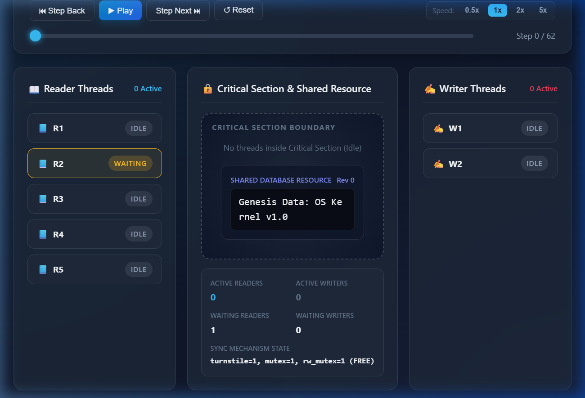
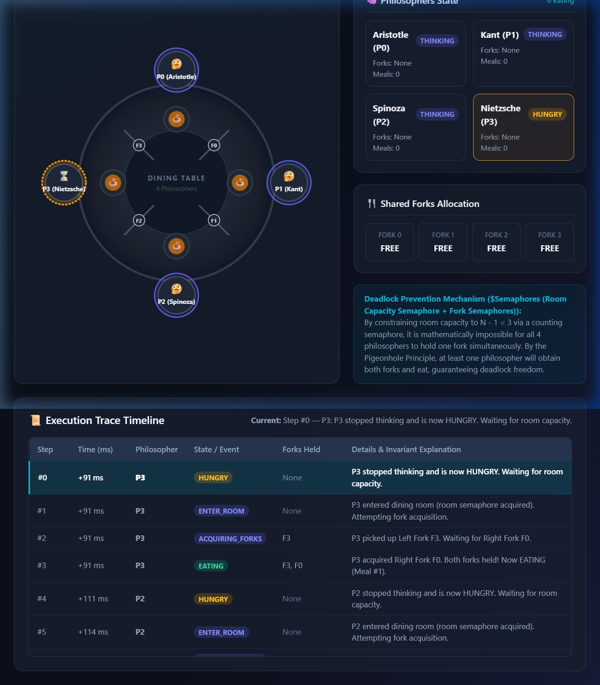

"I declare that I have personally tested and understood the submitted programs. I have disclosed the AI tools and external resources used in developing this assignment. I can explain the synchronization logic, generated HTML simulation, and modifications made to the code. I have not knowingly submitted another student’s work or unacknowledged third-party material as my own."
Student Name: [Student Full Name]
USN / Registration Number: [Student USN]
Course Code & Title: Operating Systems (CS / IT)
Date of Submission: October 2026
In multi-threaded concurrent programming and operating system kernel design, coordinating concurrent access to shared resources is paramount to prevent data inconsistency, system instability, and process deadlock. This assignment investigates and implements four classical process synchronization algorithms across two problem formulations:
1. Readers-Writers Problem:
- Scenario: A shared dataset / database is accessed concurrently by two categories of threads: Readers, which solely query the shared data without mutating it, and Writers, which update or modify the shared state.
- Synchronization Objective: Multiple readers must be allowed to read the resource concurrently without blocking one another. However, writers require strictly exclusive access: when a writer is actively updating the resource, no other writer or reader may enter the critical section. The implementation must prevent both race conditions and starvation (neither readers nor writers should be indefinitely postponed).
- Implementations:
1. Semaphore-based with FIFO turnstile starvation prevention.
2. Monitor-based with condition variables and writer-preference discipline.
2. Dining Philosophers Problem (4 Philosophers):
- Scenario: Exactly four philosophers ($P_0, P_1, P_2, P_3$) sit around a circular dining table. Between every adjacent pair of philosophers lies a shared resource: a fork ($F_0, F_1, F_2, F_3$). To eat, each philosopher requires two adjacent forks simultaneously (Left Fork $F_i$ and Right Fork $F_{(i+1)\%4}$).
- Synchronization Objective: Philosophers alternate between Thinking, Hungry, Eating, and Releasing states. Because adjacent philosophers compete for the same shared fork, they cannot eat simultaneously. The synchronization mechanism must prevent deadlock (a state where every philosopher holds one fork and waits indefinitely for another) and starvation (ensuring every philosopher eventually eats).
- Implementations:
1. Semaphore-based using a Footman / Room counting semaphore ($N-1=3$ capacity).
2. Monitor-based using Condition Variables with atomic neighbor state checking.
The semaphore-based solution utilizes three distinct binary semaphores and a shared integer counter:
rw_mutex (Semaphore(1)): Controls mutual exclusion for the critical section. It is held by either a writer or the collective group of active readers.mutex (Semaphore(1)): Protects atomic read/modify/write operations on the shared read_count variable.turnstile (Semaphore(1)): A service queue semaphore enforcing first-come, first-served (FIFO) discipline to eliminate writer starvation.read_count: An integer tracking the number of reader threads currently active within the critical section.1. First-Reader Locks, Last-Reader Unlocks:
When a reader arrives, it increments read_count. If read_count == 1 (the first reader), it acquires rw_mutex, locking out all writers. Subsequent readers increment read_count and proceed directly to read concurrently without acquiring rw_mutex. Upon departure, each reader decrements read_count. Only when read_count == 0 (the last reader exiting) is rw_mutex released.
2. Turnstile Fairness:
In naive implementations, a continuous stream of readers can starve waiting writers. To prevent this, both readers and writers pass through turnstile. When a writer arrives, it acquires turnstile, preventing subsequent readers from entering, while allowing currently reading readers to finish. Once the critical section drains, the writer immediately executes.
# Reader Routine
turnstile.acquire()
mutex.acquire()
read_count += 1
if read_count == 1:
rw_mutex.acquire()
mutex.release()
turnstile.release()
# CRITICAL SECTION (Concurrent Reading)
data = shared_resource.read()
mutex.acquire()
read_count -= 1
if read_count == 0:
rw_mutex.release()
mutex.release()
# Writer Routine
turnstile.acquire()
rw_mutex.acquire()
turnstile.release()
# CRITICAL SECTION (Exclusive Writing)
shared_resource.write(new_data)
rw_mutex.release()
In high-level languages without a native monitor keyword, an equivalent monitor abstraction is constructed via an explicit class that encapsulates internal state variables, an internal mutual exclusion lock (threading.Lock()), and two condition variables:
can_read (threading.Condition): Condition variable on which arriving readers suspend if a writer is active or waiting.can_write (threading.Condition): Condition variable on which arriving writers suspend if any readers or another writer are active.start_read(reader_id): Acquires monitor lock. Increments waiting_readers. While active_writers > 0 or waiting_writers > 0, invokes can_read.wait(). Upon waking, decrements waiting_readers, increments active_readers, and proceeds.
end_read(reader_id): Acquires monitor lock. Decrements active_readers. If active_readers == 0 and waiting_writers > 0, invokes can_write.notify().
start_write(writer_id): Acquires monitor lock. Increments waiting_writers. While active_readers > 0 or active_writers > 0, invokes can_write.wait(). Sets active_writers = 1.
end_write(writer_id): Acquires monitor lock. Resets active_writers = 0. If waiting_writers > 0, signals can_write.notify(); otherwise broadcasts can_read.notify_all().
forks = [Semaphore(1) for _ in range(4)].The classic formulation of the Dining Philosophers problem deadlocks if all philosophers become hungry simultaneously and each picks up their left fork, creating a circular wait chain ($P_0 \to F_1 \to P_1 \to F_2 \to P_2 \to F_3 \to P_3 \to F_0 \to P_0$).
To prevent this deadlock, we implement the Footman (Room Capacity) Semaphore:
room = threading.Semaphore(3) # Maximum N - 1 diners
1. Table Capacity Bound: At most $N - 1 = 3$ philosophers are permitted inside the dining room simultaneously.
2. Resource Availability: There are 4 total forks available in the room.
3. Pigeonhole Principle: When at most 3 philosophers compete for 4 resources, where each philosopher requires at most 2 forks, it is impossible for all 3 philosophers to each hold 1 fork and wait for another without at least one fork remaining unallocated.
4. Specifically, by the Pigeonhole Principle:
$$\sum_{i=1}^{k} \text{held\_forks}_i \le 4 \quad (k \le 3)$$
If each of the 3 philosophers had picked up 1 fork (3 forks held), 1 fork remains free on the table. The philosopher adjacent to this free fork is guaranteed to acquire their second fork, transition to EATING, complete their meal, and release both forks.
5. Consequently, circular waiting is mathematically impossible, and the system is provably deadlock-free.
The monitor implementation encapsulates the state of all 4 philosophers in an array state = [THINKING, HUNGRY, EATING] * 4 and creates an array of condition variables self_cond = [Condition(lock) for _ in range(4)].
pickup_forks(i): Within the monitor lock, sets state[i] = HUNGRY. Invokes the helper _test(i). If state[i] != EATING, blocks on self_cond[i].wait().
putdown_forks(i): Within the monitor lock, sets state[i] = THINKING, releases both forks, and invokes _test(left_neighbor) and _test(right_neighbor).
_test(i) Helper Function: Evaluates the fundamental state invariant:
$$\text{state}[i] == \text{HUNGRY} \land \text{state}[(i+3)\%4] \ne \text{EATING} \land \text{state}[(i+1)\%4] \ne \text{EATING}$$
If and only if both neighbors are not eating, philosopher $i$ transitions to EATING, claims both forks simultaneously, and notifies self_cond[i].
Because a philosopher only claims forks when both are guaranteed to be available, no philosopher can hold one fork while waiting indefinitely for another. This eliminates the Coffman Hold-and-Wait condition.
As mandated by Section 4 of the assignment guidelines:
"The HTML file must not be a separately hand-crafted animation that is disconnected from the submitted program. It must be generated from execution events, state transitions, logs, or data produced by the synchronization code."
graph LR
A[Concurrent Execution] --> B[Thread-Safe ExecutionTracer]
B --> C[State Snapshots Captured in Memory]
C --> D[Summary Statistics Compilation]
D --> E[HTML Generation Engine]
E --> F[Self-Contained Interactive HTML Simulation]
F --> G[Browser Inspection & Playback]
1. Instrumentation: Each Python program instantiates a thread-safe ExecutionTracer synchronized by an internal mutex.
2. Snapshot Recording: On every synchronization boundary (requesting, acquiring, entering critical section, releasing, changing state), the program captures:
- Relative execution timestamp ($t$ in milliseconds).
- Thread ID and action.
- Comprehensive state array for all participating threads.
- Resource status (shared database content/revision, fork allocations).
- Invariant explanation string.
3. HTML Code Synthesis: Upon simulation completion, common/html_templates.py embeds the captured trace directly as a serialized JavaScript object literal (const trace = [...]).
4. Interactive Playback: The HTML document contains zero external CDN dependencies, embedding responsive SVG graphics, dynamic status cards, timeline scrubbers, speed multipliers ($0.5\times, 1\times, 2\times, 5\times$), and step-by-step state inspection.
[0071ms] R2 | REQUEST_READ | R:0 W:0 | R2 requesting entry to read. Waiting on turnstile.
[0072ms] R2 | ENTER_CS | R:1 W:0 | R2 entered Critical Section. (First reader locked rw_mutex)
[0106ms] R5 | REQUEST_READ | R:1 W:0 | R5 requesting entry to read. Waiting on turnstile.
[0107ms] R5 | ENTER_CS | R:2 W:0 | R5 entered Critical Section. Joined concurrent readers.
[0150ms] R1 | REQUEST_READ | R:2 W:0 | R1 requesting entry to read. Waiting on turnstile.
[0150ms] R1 | ENTER_CS | R:3 W:0 | R1 entered Critical Section. Joined concurrent readers.
[0322ms] W2 | REQUEST_WRITE | R:2 W:0 | W2 requesting exclusive write access. Holding turnstile.
[0331ms] W1 | REQUEST_WRITE | R:2 W:0 | W1 requesting exclusive write access. Holding turnstile.
[0560ms] R2 | EXIT_CS | R:0 W:0 | R2 exited CS. (Last reader released rw_mutex)
[0560ms] W2 | ENTER_CS | R:0 W:1 | W2 acquired exclusive rw_mutex and entered Critical Section.
[0716ms] W2 | EXIT_CS | R:0 W:0 | W2 committed modification 'Memory Segment Table Rebalanced'.
[0716ms] W1 | ENTER_CS | R:0 W:1 | W1 acquired exclusive rw_mutex and entered Critical Section.
Analysis: Notice how multiple readers ($R_2, R_5, R_1$) held concurrent read access ($R:3, W:0$). When writer $W_2$ requested access, the turnstile queued arriving threads until the active readers drained, at which point $W_2$ entered exclusively ($R:0, W:1$).
[0082ms] P3 | HUNGRY | P3 called pickup_forks(). Checking neighbors (L:P2, R:P0).
[0082ms] P3 | EATING | P3 entered EATING state! Holding F3 & F0. (Meal #1).
[0110ms] P1 | HUNGRY | P1 called pickup_forks(). Checking neighbors (L:P0, R:P2).
[0110ms] P1 | EATING | P1 entered EATING state! Holding F1 & F2. (Meal #1).
[0135ms] P0 | HUNGRY | P0 called pickup_forks(). Checking neighbors (L:P3, R:P1).
[0135ms] P0 | WAITING | P0 blocked on self_cond[0]. One or both neighbors eating.
[0156ms] P2 | HUNGRY | P2 called pickup_forks(). Checking neighbors (L:P1, R:P3).
[0156ms] P2 | WAITING | P2 blocked on self_cond[2]. One or both neighbors eating.
[0269ms] P1 | THINKING | P1 putdown_forks(). Released F1, F2. Testing neighbors.
[0328ms] P3 | THINKING | P3 putdown_forks(). Released F3, F0. Testing neighbors.
[0328ms] P0 | EATING | P0 awakened and entered EATING state! Holding F0 & F1.
[0328ms] P2 | EATING | P2 awakened and entered EATING state! Holding F2 & F3.
Analysis: Non-adjacent philosophers ($P_3$ and $P_1$) ate simultaneously, maximizing table concurrency ($2$ concurrent eaters out of $4$). Meanwhile, adjacent philosophers ($P_0$ and $P_2$) properly blocked until forks were released.
A race condition occurs when concurrent execution paths read and write shared memory without synchronization, leading to arbitrary outcomes dependent on thread scheduling. In our implementations:
read_count is protected by mutex (semaphore) or the monitor lock, guaranteeing no missed updates.active_writers > 1 or (active_writers == 1 and active_readers > 0).Deadlock requires all four Coffman conditions: Mutual Exclusion, Hold and Wait, No Preemption, and Circular Wait.
turnstile prevents reader barging and ensures writers do not starve.| Metric / Feature | Semaphore-Based Approach | Monitor-Based Approach |
|---|---|---|
| Abstraction Level | Low-level OS primitive (acquire() / release()). |
High-level language construct encapsulating state and operations. |
| Error Proneness | High: Omission of a single release() or out-of-order acquire() results in catastrophic system deadlock. |
Low: Mutual exclusion is maintained implicitly by entering procedures; structured condition handling. |
| Readability & Modularity | Synchronization logic is interleaved throughout thread functions. | Clean separation: Synchronization policy is centralized inside the Monitor class. |
| Condition Signaling | Semaphores maintain an integer state; release() increments counter regardless of listeners. |
Condition variables are stateless cues; notify() has no effect if no thread is currently waiting. |
| Deadlock Vulnerability | Higher due to potential inverse acquisition sequences. | Lower; state evaluation occurs within single-lock critical section. |

Readers-Writers Simulation
Figure 1: Generated interactive simulation showing multiple active readers concurrently in the critical section, while waiting writers are queued via the turnstile.

Dining Philosophers Simulation
Figure 2: Generated interactive simulation depicting the 4-philosopher circular dining table, active fork allocations, and dynamic philosopher state transitions.
During evaluation and live demonstration, the following core topics can be demonstrated directly from the source code and generated simulations:
1. Initial Values of Semaphores:
- rw_mutex = 1 (binary semaphore for resource access)
- mutex = 1 (binary semaphore protecting read_count)
- turnstile = 1 (binary semaphore for FIFO entry)
- room = 3 (counting semaphore limiting table capacity to $N-1$)
- fork_semaphores[4] = [1, 1, 1, 1] (binary semaphores for individual forks)
2. Critical Section Identification:
- In Readers-Writers: SharedDatabase.read() and SharedDatabase.write() are the protected operations.
- In Dining Philosophers: Fork ownership assignment and eating behavior.
3. Mesa vs. Hoare Monitor Semantics:
- Python's threading.Condition follows Mesa semantics (Signal-and-Continue). The signaling thread continues execution; the awakened thread must re-evaluate condition predicates in a while loop (e.g., while active_writers > 0: cond.wait()) to handle potential race conditions before reacquiring the lock.
4. Configurable Demonstration Parameters:
- Number of readers/writers, philosopher meal counts, and execution delays can be modified directly in each file's main() function to demonstrate varying load dynamics.
ai_prompts/prompts.md.